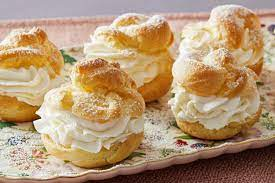

Cream Puffs

Description
Cream puffs might seem fancy, but they're actually quite simple to make in the comfort of your own kitchen! Create a decadent, impressive, bakery-worthy dessert at home with this top-rated cream puff recipe.
Cream puffs, or profiteroles, are French choux pastry balls filled with cream. Choux pastry is made without leavening agents — instead, it relies on a high moisture content to create steam and puff the pastry during baking.
Ingredients
- Instant Pudding Mix
- Cream and Milk
- Butter
- Water
- Salt
- Flour
- Eggs
Steps
- Combine the instant pudding mix, heavy cream, and milk in a small bowl. Cover and refrigerate until the filling is set.
- Bring butter and water to a boil, then add the flour and salt. Stir until the mixture forms a ball. Transfer the ball to a mixing bowl, then beat in eggs one at a time. Drop spoonfuls onto an ungreased baking sheet. Bake in a preheated oven until they're golden brown on the outside and dry on the inside.
- Let the choux pastry cool. Fill the cream puffs in one of two ways: Split the pastries and fill or pipe the pudding mixture into the shells.
- Enjoy the cream puffs as-is, dust them with powdered sugar, or drizzle them with melted chocolate. For a stunning presentation, stack the cream puffs in a cone-like shape to create a show-stopping croquembouche.